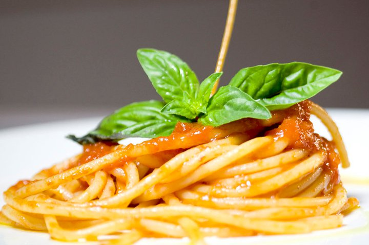

Spaghetti al pomodoro

Descrizione:
Un piatto simbolo della cucina italiana,spaghetti al pomodoro e basilico.
Questo classico primo piatto è un vero banco di prova per chi ama prepararlo in casa.
Una cottura lenta e dolce dei pomodori pelati e il profumo
delle foglioline di basilico fresche.
Ingredienti:
- Spaghetti 320 g
- Olio extravergine d'oliva 30 g
- Basilico q.b.
- Pomodori pelati 800 g
- Aglio 1 spicchio
- Sale fino q.b.
Passaggi:
- In una padella versate l'olio extravergine d’oliva insieme allo spicchio d'aglio,
dopo 2 minuti di cottura a fiamma viva, unite i pomodori pelati e aggiustate di sale.
- Fate cuocere a fuoco molto basso il sugo e aggiungete le foglie di basilico.
- A questo punto non vi resta che cuocere la pasta in abbondante acqua bollente e salata.
- Scolate gli spaghetti al dente direttamente nel sugo.
- Mescolate qualche istante a fiamma viva per amalgamare il tutto.